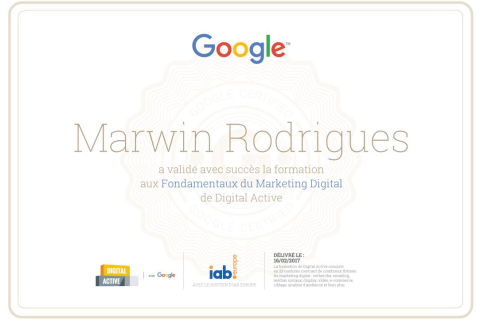

J'ai effectué mes années de collège au collège Saint-Maimboeuf à Montbéliard.
J'ai pu également valider le DNB dans ce même collège en 2017
Durant l'année suivante, j'ai effectué une année de Seconde Générale et Technologique avec l'option Création et Innovation Numérique au Lycée George Cuvier
Par la suite, j'ai obtenu le Baccalauréat STI2D au Lycée Germaine Tillion.
Avec la mention Assez-Bien.
Ensuite, j'ai effectué une formation au BTS Services Informatiques aux Organisations au Lycée Condorcet
en alternance chez Stellantis
Depuis Septembre 2021, je suis étudiant au BUT Métiers du Multimédias et de l'Internet.
Mes Compétences
๑ Qualités
Créatif
Sociable
Perfectionniste
Curieux
Enthousiaste
Impliqué
Professionnel
Passionné
๑ Savoirs
Base de Données (SQL, MySQL), POO (Java, PHP), Adobe XD, After Effect, JavaScript
J'ai effectué mes années de collège au collège Saint-Maimboeuf à Montbéliard.
J'ai pu également valider le DNB dans ce même collège en 2017
Durant l'année suivante, j'ai effectué une année de Seconde Générale et Technologique avec l'option Création et Innovation Numérique au Lycée George Cuvier
Par la suite, j'ai obtenu le Baccalauréat STI2D au Lycée Germaine Tillion.
Avec la mention Assez-Bien.
Ensuite, j'ai effectué une formation au BTS Services Informatiques aux Organisations au Lycée Condorcet
en alternance chez Stellantis
Depuis Septembre 2021, je suis étudiant au BUT Métiers du Multimédias et de l'Internet.
Mon Cursus Professionnel
Durant mon cursus professionnel j'ai principalement vécu des expériences en tant que bénévole, voici ce dernier trié chronologiquement :
Ma première expérience professionnelle était durant mon année de 3ème, j'ai réalisé un stage de découverte de 1 semaine et 3 jours dans une micro-entreprise de création de sites internet nommée Visiperf.
Durant cette période de stage j'ai alors découvert les métiers du développement WEB, les langages de développement WEB (principalement l'HTML / CSS) et tout particulièrement le Web Marketing, à la fin de ce stage j'ai passé une formation qui m'a alors permis d'obtenir ce diplôme :

Quelques années plus tard, peu après l'obtention de la majorité, je suis devenu assesseur au bureau de vote dans une école primaire nommée Victor Hugo durant 2h00.
Ensuite durant mon année de terminale, j'ai effectué un stage scolaire dans l'entreprise Flex N Gate afin de découvrir les métiers de la métallurgie ainsi que la gestion d'une entreprise.
Durant l'année 2019 à 2020, 1 fois par semaine, j'ai surveillé et initié des enfants d'une dizaine d'années en moyenne au développement WEB.
Par la suite, à partir du 29 juin 2019 au 01 juillet 2021, j'étais modérateur sur un serveur de jeu basé sur Minecraft nommé Ezaly, ma tâche principale était de modérer des parties de jeux, c'est-à-dire faire respecter le règlement du serveur afin que les parties se passent bien, mais je m'occupais également des statistiques de ce dernier, de la gestion des suggestions de la communauté et quelques supports à fournir aux nouveaux arrivants dans l'équipe.
Durant l'année scolaire 2020-2021, j'étais en formation au BTS Services Informatiques aux Organisations en alternance à Stellantis en tant que Pilote Système d'informations, J'étais chargé de création et de modification de macro en VBA sur excel.
Depuis le 19 août 2021, je suis membre de l'équipe d'arbitrage d'une association à but non lucratif nommée Ekalia qui crée des événements compétitifs sur de multiples jeux dans le but de faire découvrir de nouvelles activités et d'offrir une expérience divertissante unique à des joueurs !
Dans le futur, J'ai pour projet de rejoindre une entreprise de développement web en tant que Designer WEB, et pourquoi ne pas être directeur web afin de relier le monde professionel est mon univers qui liera l'aspect site web et l'animation 2D
Hey ! Je me nomme RODRIGUES Marwin, un étudiant agé de 20 ans, actuellement en première année au MMI Montbéliard. Passionné par le web, le design, les animations 2D, les animés et les jeux vidéos.
Ce site est un projet personnel mettant en avant mes différents projets ainsi qu'une présentation profesionnelle de moi-même, il a été réalisé à l'aide d'un ami nommé Aymeric Cucherousset hébergeant le site web.